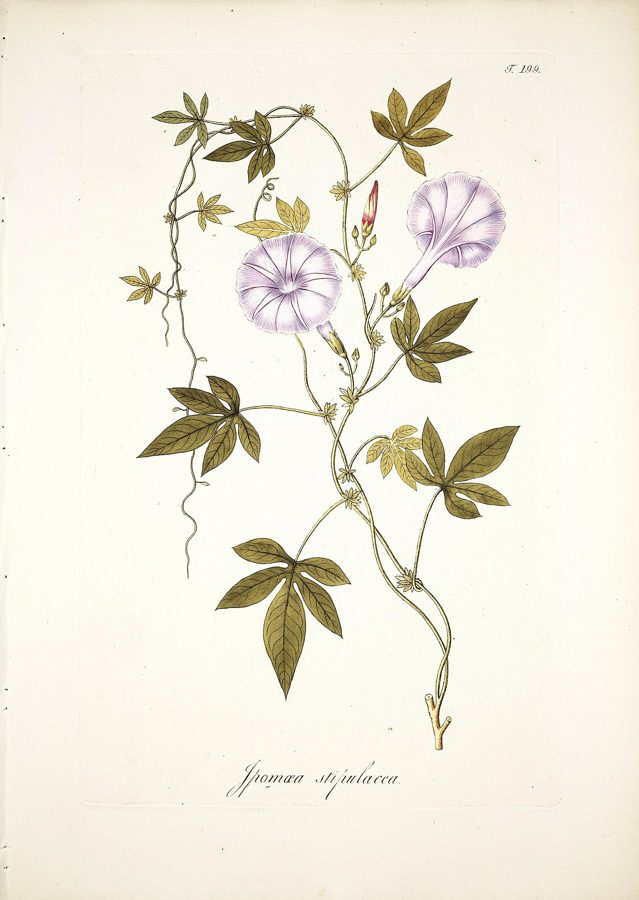

रेलवे क्रीपरRailway Creeper
Ipomoea cairica · Convolvulaceae · FLR-0384

- Scientific name वैज्ञानिक नाम
- Ipomoea cairica (L.) Sweet
- Family कुल
- Convolvulaceae
- Hindi हिंदी
- रेलवे क्रीपर
- Local names स्थानीय नाम
- railway creeper, coast morning glory, mile a minute vine
- Status here यहाँ की स्थिति
- naturalized
- Movement आवागमन
- Resident, here all year
- Known from कहाँ दर्ज
- Others have published records from the wider Awadh–Purvanchal plain, none yet from Basti–Ayodhya अवध–पूर्वांचल से दूसरों के प्रकाशित अभिलेख, बस्ती–अयोध्या से अभी नहीं
- IUCN IUCN
- LC
- Review समीक्षा
- not yet reviewed
When to look कब देखें
Present all year. साल भर मौजूद।
Tell it apart from इनसे अलग पहचानें
रेलवे क्रीपर / Railway Creeper
Ipomoea cairica (L.) Sweet — Convolvulaceae
रेलवे क्रीपर — अवध के रेलवे स्टेशनों, लोहे की जालीदार बाड़ों, पुरानी ईंट की दीवारों और नहर की पुलियों पर साल भर छाई रहने वाली एक सदाबहार लता है जिसके पत्ते हाथ के पंजों की तरह पांच से सात गहरे हिस्सों में बंटे होते हैं। इसके सुंदर तुरही जैसे फूल हल्के बैंगनी, गुलाबी या लिलक रंग के होते हैं जिनका भीतरी गला गहरा जामुनी होता है। मूल रूप से अफ्रीका की यह बेल भारत के सभी रेलवे ट्रैक और बाग-बगीचों में प्राकृतिक रूप से रम चुकी है।
Quick Identification त्वरित पहचान
| Feature | Description |
|---|---|
| Habit | Perennial, extensive twining or trailing glabrous vine with tuberous rootstock |
| Stems | Slender, cylindrical, smooth, tuberculate or smooth-barked, twining spirally over supports |
| Leaves | Palmately divided into five to seven elliptic, lanceolate or ovate-lanceolate segments |
| Flowers | Large, funnelform-campanulate, showy, violet-purple to magenta with deep purple throat |
| Peduncles | Axillary, one to few-flowered; sepals ovate, mucronulate with scarious margins |
| Fruit | Subglobose capsule containing four densely pubescent or hairy brown seeds |
Vigorous perennial vine with palmately five to seven-parted leaves, smooth twining stems, and large funnelform purple flowers with a deep dark throat. Readily recognized along railway embankments and fences throughout Uttar Pradesh.
हिंदी: हथेली की तरह पांच से सात कटी हुई पत्तियां और गहरे बैंगनी गले वाले बड़े तुरही जैसे फूल इसकी स्पष्ट पहचान हैं।
Morphology आकारिकी
Perennial herbaceous climber or twiner reaching lengths of several meters, often forming dense tangled curtains over shrubs, wire fences, and brick walls. Stems are slender, wiry, glabrous, cylindrical, often tuberculate at the base with small warty projections, twining counter-clockwise around any available support.
Leaves are alternate, petiolate, and deeply palmately divided almost to the petiole insertion into five to seven distinct segments. The segments are elliptic, lanceolate, or ovate-lanceolate, entire along the margins, obtuse or acute at the apex, and mucronulate. The basal pair of segments is frequently smaller or bifid. The petioles are slender, glabrous, and bear pseudostipules (modified small axillary leaves) at their base that resemble true stipules.
Flowers are solitary or borne in few-flowered axillary cymes on slender peduncles. The calyx consists of five subequal, ovate to elliptic sepals with membranous margins and a minute apical mucro. The corolla is large, showy, funnelform to campanulate, measuring several centimeters across the limb, coloured pale purple, pinkish-violet, or magenta, with a contrasting dark violet-purple tube and throat. Stamens are five, unequal in length, enclosed within the corolla tube; anthers are white. The ovary is superior, two-celled, with a filiform style and a capitate two-lobed stigma. The fruit is an ovoid to subglobose capsule containing four rounded seeds covered in dense, silky hairs.
| Measurement | Dimension / Count | Qualitative Context |
|---|---|---|
| Stem length | Measurement not available in consulted open sources. | Extensive twining climber forming dense curtains |
| Leaf diameter | Measurement not available in consulted open sources. | Palmately five to seven-lobed, glabrous |
| Corolla diameter | Measurement not available in consulted open sources. | Large, showy funnel-shaped mauve-purple blossom |
| Calyx length | Measurement not available in consulted open sources. | Five subequal ovate sepals with scarious margins |
| Seed count | Measurement not available in consulted open sources. | Four hairy seeds per subglobose capsule |
हिंदी: इसके पत्ते पंजे की तरह पांच हिस्सों में बंटे होते हैं। तना बहुत लंबा और मजबूत होता है जो लपेटे मारता है। फूल बड़े, गुलाबी-बैंगनी और तुरही के आकार के होते हैं।
Behaviour & Ecology व्यवहार एवं पारिस्थितिकी
Ipomoea cairica is an extremely hardy, drought-tolerant, and fast-growing twiner that thrives in full sun. Although requiring some moisture to establish, once its tuberous root system is formed, it withstands long dry spells by shedding part of its foliage and resuming rapid growth with the rains.
The species produces an abundance of nectar within the deep floral tube, which opens in early morning and closes by late afternoon. Flowers that are not pollinated wilt and drop by midday in hot weather. The plant spreads both by seed and vegetatively; creeping stems rooting readily at the nodes wherever they make contact with moist soil. This capacity for rapid vegetative multiplication allows it to smother competing vegetation along ditch banks and rural hedgerows.
हिंदी: यह बेल धूप में बहुत तेजी से बढ़ती है और जमीन छूते ही इसकी गांठों से नई जड़ें फूट पड़ती हैं। इसके फूल सुबह जल्दी खिलते हैं और दोपहर की तेज धूप में मुरझा जाते हैं।
Life Cycle / Phenology जीवन चक्र एवं ऋतुचर्या
Railway Creeper is a perennial evergreen climber that flowers virtually throughout the year in northern India, with peak blossoming occurring between September and April. During the monsoon months, rapid vegetative growth dominates, with new shoots extending rapidly over fences and bushes.
As the weather cools after the rains, profuse floral buds develop at almost every axil. Flowers open in sequence over many weeks. Pollinated flowers develop into green capsules that ripen into dry, brittle brown capsules in late winter and spring. The capsules split open to release silky-haired seeds that are dispersed by wind and water wash along railway ditches.
हिंदी: यह बेल लगभग पूरे साल हरी रहती है और फूल देती है। बरसात में यह बहुत तेजी से फैलती है और जाड़ों से लेकर गर्मियों तक इसमें अनगिनत फूल खिलते हैं।
Associated Species / Interactions संबद्ध प्रजातियाँ एवं पारिस्थितिक संबंध
The large floral tubes are visited extensively by nectar-seeking insects. Honey bees and native solitary bees crawl into the corolla throat during morning hours to collect nectar and pollen. Hawkmoths hover before the open blossoms at dusk, while the dense tangles of foliage provide safe nesting and roosting cover for garden birds and hunting sites for orb-weaving spiders.
In rural Awadh, the dense tangled vine curtains provide shelter and foraging territory for small passerines and insectivorous birds.
हिंदी: इसके फूलों पर सुबह के समय मधुमक्खियां और शाम के धुंधलके में पतंगे आते हैं। घनी लताओं के बीच छोटे पक्षी छिपते हैं और मकड़ियां जाले बनाती हैं।
Pests and Diseases कीट एवं व्याधियाँ
The vine is remarkably robust and resistant to most devastating agricultural pests. However, leaves are occasionally attacked by leaf-mining agromyzid flies and spider mites during very hot, dry pre-monsoon spells.
Caterpillars of Agrius convolvuli can cause noticeable local defoliation of foliage clusters, though the vigorously resprouting vine recovers quickly without lasting harm.
हिंदी: यह बेल बहुत मजबूत होती है और बीमारियों का इस पर कम असर होता है। कभी-कभी हॉक मॉथ की सूंडियां इसके पत्ते खा जाती हैं, लेकिन यह तुरंत नए पत्ते निकाल लेती है।
Agricultural / Human Relevance कृषि एवं मानवीय उपयोगिता
Ipomoea cairica is widely cultivated and naturalized across India as an ornamental cover vine for fences, pergolas, verandas, and railway boundary wires. Its ability to thrive on poor, gravelly soils and tolerate severe neglect made it a favourite planting of the colonial Indian Railways, earning it the universal common name Railway Creeper.
In rural areas, it serves as a living green barrier that binds soil along roadside drains and provides visual privacy around homestead enclosures. It has minor traditional medicinal applications, with leaf pastes used in folk practice to dress skin eruptions and small boils.
हिंदी: रेलवे स्टेशनों और घरों की चारदीवारी को सुंदर बनाने के लिए इसे खूब लगाया जाता है। कम पानी और खराब मिट्टी में भी हरी रहने के कारण इसे 'रेलवे बेल' का नाम मिला।
Expected Locally स्थानीय रूप से अपेक्षित
Not a field record. Written from published accounts for eastern Uttar Pradesh. No confirmed local sighting yet — if you have seen it, that is what the atlas needs.
अभी तक स्थानीय पुष्टि नहीं। यह विवरण प्रकाशित स्रोतों से है, किसी अवलोकन से नहीं।
Occurs widely throughout the towns and railway corridors of eastern Uttar Pradesh, covering fences, telegraph lines, old masonry, and rural hedge margins. Observers in Basti, Ayodhya, and neighbouring stations can find it twining vigorously over boundary fences with palmately divided five-lobed leaves and pink-violet morning-glory flowers.
GBIF holds published records from the wider Awadh–Purvanchal plain, none yet from Basti–Ayodhya.
A first local record for the atlas would be a clear photograph showing diagnostic features, accompanied by date, time, and precise location coordinates sent through the project's About page.
हिंदी: बस्ती और अयोध्या रेलवे स्टेशनों की बाड़ों और ग्रामीण सड़कों के किनारे लगे लोहे के तारों पर यह बेल साल के किसी भी महीने देखी जा सकती है।
Distribution वितरण
Native to tropical Africa and the Mediterranean region (including Cape Verde). It has been introduced and naturalized across the pantropical and subtropical regions of the world, including the Americas, Asia, and Australasia.
In India, it is fully naturalized and ubiquitous throughout every state, thriving in urban wastelands, along transport corridors, river floodplains, and rural hedgerows from sea level up into the low hills.
हिंदी: यह मूल रूप से उष्णकटिबंधीय अफ्रीका और भूमध्यसागरीय क्षेत्र की लता है, जो अब भारत और दुनिया के तमाम गर्म देशों में पूरी तरह प्राकृतिक रूप से स्थापित हो चुकी है।
Research Questions शोध प्रश्न
- How do seasonal temperature extremes in eastern Uttar Pradesh influence the morning opening and midday closing times of Ipomoea cairica flowers?
- Does the dense growth of Railway Creeper along canal banks effectively suppress aggressive invasive weeds such as Parthenium hysterophorus?
- What proportion of fruit set in urban roadside populations is attributed to diurnal bees versus crepuscular sphingid moths?
- क्या रेलवे बेल की जड़ों की गांठें अत्यधिक सूखे के महीनों में पौधे को जीवित रखने का मुख्य साधन हैं?
- क्या ग्रामीण क्षेत्रों में इस बेल की घनी झाड़ियां पक्षियों को सुरक्षित प्रजनन स्थल प्रदान करती हैं?
हिंदी: क्या यह बेल नहरों की पटरियों पर अन्य हानिकारक खरपतवारों को दबाती है और इसके फूलों का परागण रात के पतंगे करते हैं या दिन की मक्खियां, यह शोध के विषय हैं।
Similar Species मिलती-जुलती प्रजातियाँ
| Species | How to tell apart | हिंदी | |
|---|---|---|---|
| Pink Morning Glory \ | Ipomoea carnea | Erect or scrambling shrub; leaves ovate-cordate, undivided; stems hollow and woody | बेशर्म सीधा या झाड़ीदार पौधा है, इसके पत्ते बिना कटे दिल जैसे होते हैं और डंडी खोखली होती है |
| Water Spinach \ | Ipomoea aquatica | Creeping hollow aquatic or semi-aquatic stems; leaves hastate or sagittate, edible | कलमी साग पानी में तैरता है, इसके पत्ते तीर जैसे होते हैं और डंडियां खोखली व खाने योग्य होती हैं |
| Ipomoea pes-tigridis (Tiger Foot Morning Glory) | Annual hairy vine; leaves palmately five to nine-lobed; flowers small, white or pink in heads | तना अत्यधिक रोयेंदार, पत्ते छोटे, फूल सिरों पर सफेद-गुलाबी |
Field rule: Look for the palmately five- to seven-parted glabrous leaves combined with large lilac-purple funnel flowers that have a dark violet throat, twining vigorously on fences.
हिंदी: हाथ के पंजे जैसे पांच से सात कटे हुए पत्ते और गहरे जामुनी गले वाले बड़े बैंगनी-गुलाबी फूलों से इसे फौरन पहचानें।
Taxonomy & Classification वर्गिकी एवं वर्गीकरण
Original description. Carl Linnaeus described the species under the basionym Convolvulus cairicus in Systema Naturae, ed. 10, vol. 2, p. 922 (1759). The English botanist Robert Sweet transferred it to the genus Ipomoea as Ipomoea cairica (L.) Sweet in Hortus Britannicus, p. 287 (1826).
Subspecies. No subspecies are recognized in northern India. Historical regional works, including Hooker's Flora of British India (1885), referred to this plant under the taxonomic synonym Ipomoea palmata Forssk. (1775). In Flora of the Upper Gangetic Plain (1911), Duthie treats it under the name Ipomoea pulchella Roth ("I. palmata, F.B.I. iv. 210, in part") and notes that it is universally cultivated in northern Indian gardens and usually known as the "Railway creeper".
Family and order placement. Belongs to the morning glory family Convolvulaceae, order Solanales. Within the family, it is placed in the tribe Ipomoeeae.
IUCN status rationale. Least Concern (LC). The species has an immense global pantropical distribution, high reproductive output, and thriving populations in anthropogenic landscapes.
हिंदी: लिनिअस ने 1759 में इसे कॉन्वॉल्वुलस कैरिकस नाम दिया था, जिसे 1826 में रॉबर्ट स्वीट ने आइपोमिया कैरिका बनाया। पुरानी वनस्पति पुस्तकों में इसे आइपोमिया पालमाटा भी लिखा गया है।
Photo Gallery छायाचित्र दीर्घा
No photos yet — this profile is written from published accounts. A voucher-grade photo from eastern Uttar Pradesh will illustrate this species in the atlas.
References संदर्भ
- Original description: Linnaeus, C. (1759). Systema Naturae, ed. 10, vol. 2. Laurentii Salvii, Holmiae, p. 922.
- Sweet, R. (1826). Hortus Britannicus. James Ridgway, London, p. 287.
- Hooker, J. D. (1885). The Flora of British India. Vol. 4. L. Reeve & Co., London, p. 214. (as Ipomoea palmata).
- Duthie, J. F. (1911). Flora of the Upper Gangetic Plain, and of the Adjacent Siwalik and Sub-Himalayan Tracts. Vol. 2. Superintendent of Government Printing, Calcutta, p. 117. (as Ipomoea pulchella).
- GBIF Occurrence Data — Ipomoea cairica, India (2025).
- IUCN Red List of Threatened Species — Ipomoea cairica, assessed 2024.
Source file: species/flora/climbers/railway_creeper.md